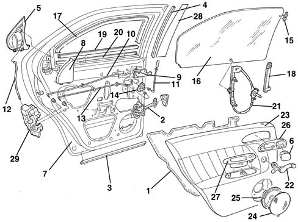

Introduction - PASSENGER COMPARTMENT REAR SIDE DOORS
- Path
- Descriptions > 70 FITTINGS > 7010 PASSENGER COMPARTMENT REAR SIDE DOORS > Introduction - PASSENGER COMPARTMENT REAR SIDE DOORS
- Kind
- system description
- Applies to
- all engines; all production periods
- Interactive page
- https://sloeber94.github.io/elrnDB-a156/en/#/3239237
Applies to: all engines; all production periods
GLOSSARY
Anti-intrusion bar
Structural strengthening element inserted in the door frame to contain deformations towards the inside of the passenger compartment in the case of side impacts.
Passive safety
This is the collection of measures which interact to reduce the consequences to the occupants of the vehicle after an accident. The following come into this category: the laminated windscreen, the collapsible steering column, the door opening cables, the material from which the steering wheel is made, the absence of dangerous projections and corners in the dashboard, the structure of the pedals, the shape and resistance of the seats, the head restraints, the seat belts (also with pre-tensioners), the air bags and the bodyshell with differentiated resistance, in other words the passenger survival cell which is as rigid as possible and the front and rear sections, on the other hand, with crumple zones designed to gradually absorb the energy of the impact.
VIEW OF ASSEMBLY
The figure shows the entire subassembly

1, Water guard protection 2, Door opening limiter 3, Lower seal 4, Weather strip 5, Exterior handle 6, Ashtray 7, Door frame 8, Panel 9, Interior handle 10, Interior opening link 11, Safety device 12, Link between exterior handle and lock 13, Safety device link 14, Control mechanism 15, Window fastening element 16, Window glass 17, Window glass channel 18, Window glass guide 19, Exterior glass scraper trim 20, Interior glass scraper trim 21, Window opening mechanism 22 Window handle 23, Interior panel 24, Speaker grille 25, Speaker 26, Interior panel 27, Interior grab handle 28, Pillar outer trim 29, Lock
STRUCTURE
The special feature of the rear doors is the fact that the handle is deliberately concealed in the trim around the glass.
To ensure good passive safety (*), the structure is fitted with a side impact bar (*) to limit deformation due to side impact.
FITTINGS
The various devices and controls are mounted on the structure according to criteria designed to facilitate repair operations:
- The door wiring coupling can be disconnected without removing the door panel.
- The outer handle can be replaced by only removing the inner panel.
SEALS
The door seals have been designed to guarantee a perfect seal and eliminate aerodynamic rustling.